Footprints: Microsoft Global ML Building Footprints (ODbL) · Ruas e bairros: © colaboradores do OpenStreetMap (ODbL) · Altura: Google Open Buildings 2.5D Temporal 2023 (CC BY 4.0) · Relevo: TOPODATA/INPE · Limite: IBGE · Método adaptado de LIS Pro 3D “3D City Modelling”
